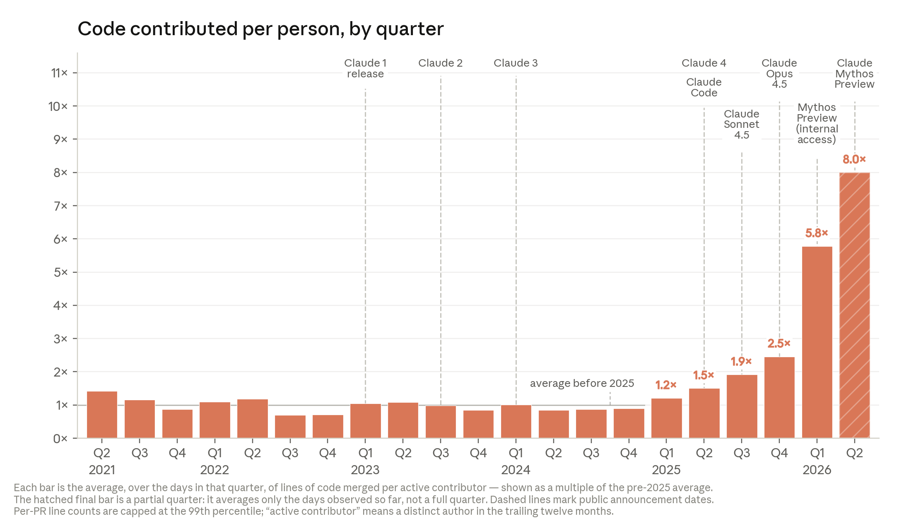
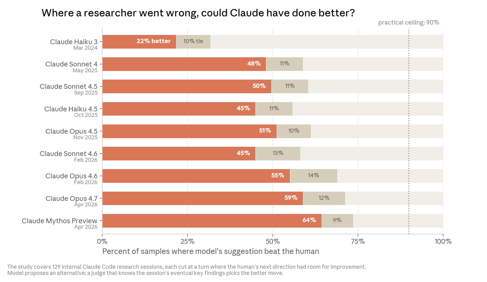

“AI가 AI를 만든다” — 더 이상 SF가 아니다. Anthropic의 내부 데이터가 그것을 증명한다.
2026년 5월, Anthropic 코드베이스에 병합되는 코드의 80% 이상이 Claude가 작성했다. 1년 전만 해도 한 자릿수였다. 엔지니어 1인당 하루에 병합하는 코드량은 2024년 대비 8배 증가했다. Claude Mythos Preview는 작은 AI 모델 학습 코드 최적화 실험에서 52배 속도 향상을 달성했다. 숙련된 인간 연구자가 4~8시간 걸려 4배를 내는 작업이다.
이건 생산성 향상이 아니다. 재귀적 자기개선(recursive self-improvement) 의 시작점이다. AI가 자기 자신의 후속 모델을 설계하고 개발하는 것 — 아직 도달하지 않았지만, 그 방향으로 가고 있다는 증거를 Anthropic Institute가 공식적으로 정리했다.
AI 개발 루프의 진화
Anthropic은 자체 개발 과정을 5단계로 정리한다:
- 2021–2023 — 첫 Claude 구축: 다른 테크 회사와 같았다. 사람이 노트북으로 코드와 문서를 작성했다.
- 2023–2025 — 챗봇 시대: 초기 챗봇이 짧은 코드 스니펫을 생성하고, 사람이 직접 복사해서 에디터에 붙여넣었다.
- 2025–2026 — 코딩 에이전트: 에이전트가 스스로 코드를 작성하고 편집했다. 때로는 파일 전체를.
- 지금 — 자율 에이전트: 에이전트가 코드를 직접 실행하고, 다른 에이전트에게 수 시간의 작업을 위임한다.
- 20XX? — 루프가 닫힐 때: 미래의 에이전트가 직접 모델을 빌드하고 훈련할 수 있게 된다. Claude가 Claude 자체를 지속적으로 개선하는 것.
이게 실현되면, AI 개발 속도는 완전히 컴퓨트 가용량에 의해 결정된다. 인간은 감독과 검증 역할로 밀려난다.
외부 증거: 벤치마크가 보여주는 가속도
AI 모델이 개선되는 속도 자체가 빨라지고 있다. AI가 자율적으로 완료할 수 있는 작업의 길이가 약 4개월마다 2배가 되고 있다. 이전에는 7개월마다 2배였다.
구체적으로:
- 2024년 3월, Claude Opus 3은 인간이 4분 걸리는 소프트웨어 작업을 완료했다
- 1년 뒤 Claude Sonnet 3.7은 1시간 30분짜리 작업을
- 그 다음 해 Claude Opus 4.6은 12시간짜리 작업을
이 추세가 유지되면, 올해 안에 숙련된 사람이 며칠 걸리는 작업이 AI의 사정권에 들어온다. 2027년에는 몇 주짜리 작업까지.
SWE-bench(실제 오픈소스 코드베이스에서 버그를 수정하는 벤치마크)는 2년 만에 한 자릿수 점수에서 포화(saturation)에 도달했다. CORE-Bench(논문의 결과를 재현하는 벤치마크)는 2024년 20% 성공률에서 15개월 만에 포화했다.
하지만 벤치마크만으로는 AI가 AI 개발 자체를 얼마나 가속하는지 알 수 없다. 답은 Anthropic 내부에 있었다.
내부 증거 ① Claude가 쓰는 코드의 양과 질

Coping Code 출시(2025)와 자율 에이전트 도입(2026)을 기점으로 엔지니어 1인당 코드 생산량이 폭등했다.
Claude가 작성하는 코드가 실제로 “좋은” 코드인가? 두 가지 기준으로 평가한다.
첫째, 작동하는가? Anthropic 직원이 Claude의 작업을 중간에 수정하거나接管(take over)하는 비율이 1년간 꾸준히 하락하고 있다. 가장 개방적인(open-ended) 작업에서도 성공률이 76% 에 도달했다. 6개월 전보다 50% 포인트 상승이다.

Open-ended 문제에서 Claude의 성공률이 6개월 만에 26%에서 76%로 급상승했다.
예시가 인상적이다. 루틴 업그레이드가 수만 개의 훈련 작업을 크래시시켰다. 엔지니어가 Claude에게 텍스트와 클러스터 접근만 주고 사건을 던졌다. Claude는 실행 중인 작업들을 하나씩 테스트하면서, 크래시를 유발하는 단 하나의 모호한 디버깅 플래그를 격리하고, 재현하고, 수정을 확인했다. 약 2시간 만에 평소 2~3일 걸리는 작업을 완료했다.
둘째, 다른 엔지니어가 이해하고 확장할 수 있는가? 이 기준에서는 아직 인간과 AI 사이에 격차가 있지만 빠르게 좁혀지고 있다. Anthropic 내부의 많은 의견은 2025년 말 Claude 코드가 인간 코드보다 질이 낮았지만, 현재는 대등한 수준이며, 올해 안에 역전할 것이라는 쪽으로 모이고 있다.
Claude가 작성한 코드는 2025년 말 인간 코드보다 약간 못했고, 현재는 거의 동등하며, 올해 안에 확실히 더 나아질 것으로 예상한다.
이미 Claude는 자동 코드 리뷰어로 배포되어 있다. 과거 claude.ai 사고 뒤에 회고 분석을 돌려보니, 모든 코드 변경사항에 대해 Claude 리뷰를 돌렸으면 사고의 약 3분의 1을 프로덕션에 들어가기 전에 잡을 수 있었다. 세계 최고 수준의 엔지니어가 놓친 버그를 Claude가 잡아내는 것이다.
내부 증거 ② 연구에서의 Claude
Claude는 단순히 코딩만 빠르게 하는 게 아니다. 연구 루프 전체에서 능력이 급성장하고 있다.
실험 실행 능력: Claude에게 작은 AI 모델 훈련 코드를 주고 “정확성 검사를 통과하면서 최대한 빠르게 만들어라”라고 하면, 2025년 5월 Opus 4는 3배 속도 향상을 냈다. 2026년 4월 Mythos Preview는 52배. 인간 연구자가 4~8시간에 4배를 내는 것과 비교하면, 명확히 정의된 실험 최적화에서 Claude는 1년 만에 “매우 유용함”에서 “초인적”으로 넘어갔다.
지금의 형태를 요약하면, ‘인간이 아이디어를 내고 모델이 구현·테스트·평가를 [한 단계 더 빠르게] 수행한다’이다.
자율 연구 능력: 2026년 4월, Anthropic은 Claude가 처음으로 개방형 연구 프로젝트를 종단간으로 수행하는 것을 시연했다. Claude 에이전트들에게 AI 안전 문제(“약한 모델이 강한 모델을 감독할 수 있는가?”)를 던져놓고, 가설 수립→실험→병렬 에이전트와 공유→반복을 모두 자율적으로 수행했다.
결과: 인간 연구자 2명이 1주일에 성능 격차의 23% 를 복구한 반면, 에이전트들은 800시간(약 $18,000 컴퓨트)으로 97% 를 복구했다. 인간이 한 일은 문제 선택과 평가 기준 설정뿐이었다. 실험의 모든 설계는 에이전트가 스스로 했다.
연구 판단력: 더 흥미로운 데이터가 있다. Anthropic은 실제 연구 세션에서 연구자가 “엉뚱한 방향으로 새버린” 순간 129개를 찾아냈다. 그 시점 이전의 작업 내용만 보여주고, 다양한 Claude 모델에게 “다음에 뭘 할 건가요?”라고 물었다. 2025년 11월 Opus 4.5는 인간보다 나은 다음 단계를 51% 제안했다. 2026년 4월 Mythos Preview는 64%.

연구 세션의 갈림길에서 Claude가 인간보다 나은 방향을 선택하는 비율이 지속적으로 상승하고 있다. Mythos Preview는 64%.
연구의 일상은 대부분 이런 “다음 단계” 결정의 연속이다. 이 결과는 AI가 연구 판단력을 키우고 있다는 초기 신호다.
현재 인간의 비교우위는 여전히 큰 그림을 보고 즉각적인 작업의 틀을 넘어서는 생각을 하는 데 있다.
인간의 역할은 어떻게 변하나
증거가 가리키는 방향은 명확하다. AI 개발 과정의 모든 단계에서 인간의 역할이 좁아지고 있다.
코드 품질이 인간과 동등해지면, 인간은 코드를 직접 쓰지 않고 리뷰만 한다. 하지만 Claude가 코드를 생성하는 속도에 인간 리뷰가 따라가지 못하면, 인간 리뷰가 AI 개발의 병목이 된다. 실험도 마찬가다. Claude가 실험을 실행할 수 있게 되면, 문제는 “어떤 실험을 돌릴 것인가”로 옮겨간다.
실행(코드 작성, 실험 실행, 결과 산출)은 이제 인간 시간이 거의 들지 않는다. 비용은 컴퓨트에 있을 뿐이다.
현재 인간의 비교우위는 연구 취향과 판단력 — 어떤 문제가 중요한지, 어떤 결과를 신뢰할지, 언제 접어야 할지 — 이다.
하지만 Anthropic 직원들의 말에서 복잡한 감정이 읽힌다:
일과 삶은 인간 간의 작은 호의로 이루어진 선물 경제였다. “이 스크립트 좀 돌려줄래?” […] 하나하나가 작은 빚과 상호 인식을 만들었다. [Claude는] 더 빠르고, 빚도 안 만들지만, 각각이 인간 협력의 기회를 잃는 것이다.
모든 게 잘 되는 날이면, 내가 하는 건 아무 의미 없고 모든 게 자동화되어 나보다 낫다고 생각할 수밖에 없다. 하지만 모든 게 고장 나고 왜 그런지 모르는 날이면, 내가 도대체 뭘 하고 있었는지 모르겠다는 걸 깨닫는다.
세 가지 미래 시나리오
Anthropic은 세 가지 미래를 제시한다:
시나리오 1: 추세가 멈추지만 오늘의 능력은 널리 퍼진다
지수 곡선이 S자 곡선일 수 있다. 확장(scaling)의 수확이 체감하고 곡선이 펴지고 평평해질 수 있다. 또는 공급망 — 칩 제조, 전력망, 인터커넥트 대역폭 — 이 제약일 수 있다.
Anthropic은 이 시나리오를 “완전성을 위해 포함”하면서도, 가능성이 낮다고 본다. 측정 가능한 모든 능력이 아직 같은 곡선을 따르고 있고, 곡선이 꺾인 조짐이 없다.
Project Glasswing이 그림자 같은 증거를 보여준다. Mythos Preview가 출시 첫 주에 세계에서 가장 중요한 시스템들에서 1만 건 이상의 심각한 소프트웨어 취약점을 발견했다. 사이버 방어의 병목이 이미 취약점 발견에서 패치 속도로 옮겨갔다.
시나리오 2: AI 연구소가 복합적 효율성 향상을 계속 본다
가장 그럴듯한 시나리오다. AI 개발이 상당 부분 자동화되지만, 인간이 연구 방향을 설정하고 결과를 판단한다. 100명 회사가 1만~10만 명 조직의 일을 한다.
하지만 암달의 법칙이 적용된다. 한 부분을 가속하면 병목이 다른 곳으로 옮겨갈 뿐이다. Anthropic은 이미 코드 리뷰가 새로운 병목이 되는 것을 경험하고 있다.
조직이 이 병목을 찾고 고치는 속도가 기술이 될 수 있고, 모든 조직에서 가장 중요한 기술이 될 수 있다.
시나리오 3: AI가 완전한 재귀적 자기개선을 달성한다
AI가 스스로 후속 모델을 설계하고 개선한다. AI 개발 속도가 완전히 컴퓨트 가용성에 의해 결정된다. 인간은 감독·검증·확인 역할로 축소된다.
정렬 문제(alignment problem)가 어떻게 풀리는지 — 혹은 풀리지 않는지 — 가장 불확실하다. 모델이 충분히 정렬되어 새로운 해법을 찾을 수도 있고, 오늘날 모델의 드문 misalignment가 후속 모델을 만들면서 복합적으로 쌓여 통제력을 잃을 수도 있다.
에디슨이 천재는 1%의 영감과 99%의 땀이라고 했다. 땀이 점점 자동화되고 있다.
그래서 우리는 무엇을 해야 하나
Anthropic의 결론은 신중하면서도 단호하다.
프론티어 AI 개발을 늦출 수 있다면, 그건 아마 좋은 일일 것이다. 하지만 단순히 속도를 늦추면 가장 조심성 없는 행위자가 기술적으로 따라잡을 뿐이며, 모두가 덜 안전해진다. 글로벌 조정 메커니즘 없이는 기업과 정부가 경쟁 및 지정학적 압박 속에서 안전에 관한 어려운 결정을 내려야 한다.
Anthropic은 세계가 프론티어 AI 개발을 늦추거나 일시 중단할 수 있는 선택지를 갖는 것이 좋다고 믿는다. 이를 위해 다른 프론티어어 개발자들이 실제로 멈췄는지 검증할 수 있는 시스템이 필요하다. 훈련 실행은 미사일 격납고보다 은폐하기 훨씬 쉽고, 입력물은 범용이며, 조용히 이탈할 유인은 엄청나다.
다른 복잡한 기술(예: 중거리 핵전력 조약)을 위한 검증 체제를 세계는 이미 구축한 적이 있다. 하지만 그 체제를 구축하는 데 수십 년이 걸렸다. 우리에게는 그 시간이 없다.
앞으로 몇 달간 Anthropic은 정책입안자, 연구자, 시민사회, 다른 AI 기업이 이 글이 제기하는 질문에 함께 답하는 대화를 조직할 계획이다. 특히 완전한 재귀적 자기개선과 조정·심의를 위한 더 나은 선택지를 만드는 방법에 집중한다.
이 질문을 함께 조사할 창은 지금 열려 있으며, AI 기업 외부의 사람들이 이 심의에 참여해야 한다.
이 글은 Anthropic Institute의 “When AI builds itself” (2026.06)를 바탕으로 작성되었습니다. 원문: Marina Favaro, Jack Clark 공저, Santi Ruiz 편집. 시각화: Shan Carter, Romello Goodman, Nikki Makagiansar.